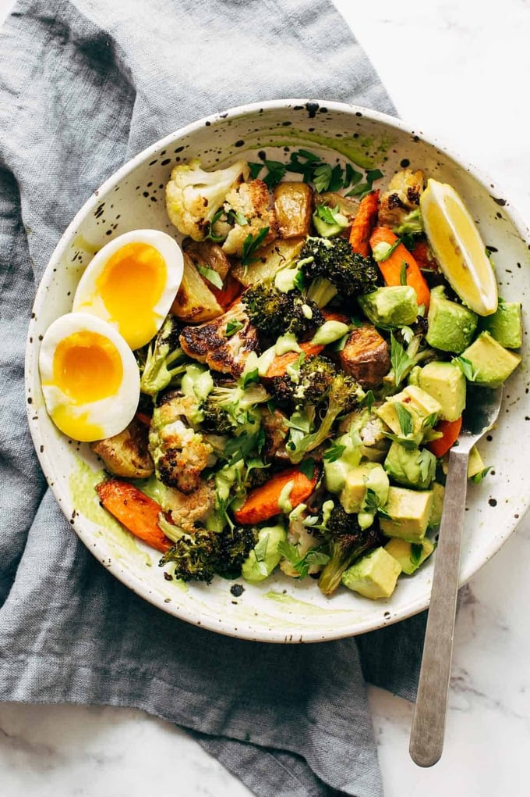
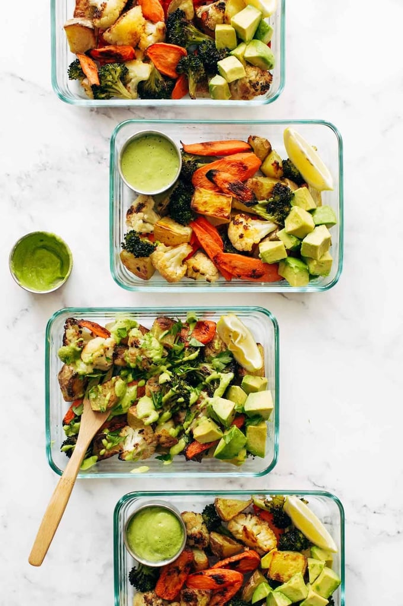

It’s just hard to go wrong with roasted vegetables – and I mean the type where they’re salted, oiled, and
browned to such delicious perfection that you really actually GENUINELY enjoy eating them straight off the
pan. But we don’t stop there.
I like to plop a few hunks of avocado on the plate, maybe cut open a soft boiled egg, and waterfall the
whole thing in green tahini sauce.
INGREDIENTS

Will you add eggs? Tofu? Chicken? Or enjoy it plain with a squeeze of lemon and your green tahini
drizzle? GIRL THE SKY IS THE LIMIT! I LOVE U MEAL PREP!
Roasted Vegetables
- 8 large carrots, peeled and chopped
- 3 golden potatoes, chopped
- 1 head of broccoli, cut into florets
- 1 head of cauliflower, cut into florets
- olive oil and salt
Green Tahini
- 1/2 cup olive oil (mild tasting)
- 1/2 cup water
- 1/4 cup tahini
- a big bunch of cilantro and/or parsley
- 1 clove garlic
- squeeze of half a lemon (about 2 tablespoons)
- 1/2 teaspoon salt (more to taste)
Optional Extras:
- 6 hard boiled eggs (or other protein)
- 3 avocados
INSTRUCTIONS
- Prep:Preheat the oven to 425 degrees.
- Roasted Vegetables:Arrange your vegetables onto a few baking sheets lined with parchment (I keep each vegetable in its own little section).
Toss with olive oil and salt. Roast for 25-30 minutes
- Sauce:While the veggies are roasting, blitz up your sauce in the food processor or blender.
- Finish:Voila! Portion and save for the week! Serve with avocado or hard boiled eggs or… anything else that would make your lunch life amazing.